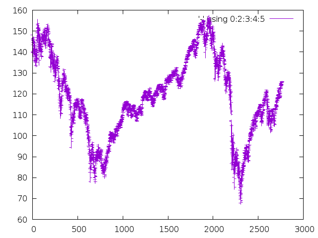
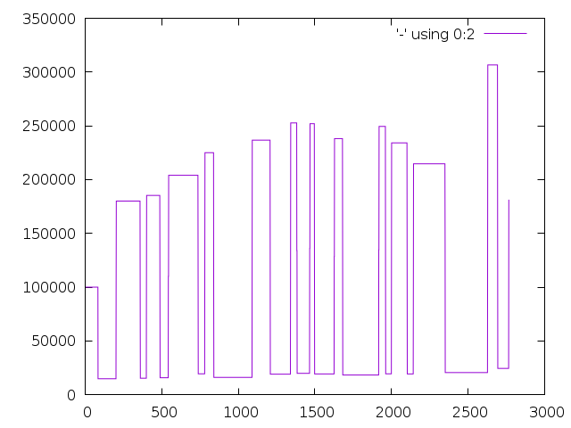

Basic trading system for a single stock
1 DONE Introduction
We wish to develop a basic trading system, which can watch a single stock and keep track of a single position an said stock.
Our language of choice is Common Lisp, we start by loading the required dependencies through Quicklisp.
(ql:quickload '(ol-utils drakma cl-csv parse-number eazy-gnuplot)) (in-package :ol-user)
The programming style chosen is literate programming. We think of our program as a book which contains source code in between the explanation/exposition of the actual problem. As programming environment, we use Org mode for Emacs. It easily allows to export to HTML or PDF (and more) and to extract just the source code (this is called tangling).
You probably received this document with several files, including a PDF or HTML file with all the content, some image files for the plots, a .lisp file which contains just the Common Lisp code, and maybe even the .org file, which is the source document for all the others.
2 DONE Importing data
We begin by downloading the CSV data and parsing it. Notice that months are given first and use numbers 0-11. For days, the usual numbering 1-31 is used.
(defpar *stock-csv-data* (cl-csv:read-csv (drakma:http-request "http://chart.finance.yahoo.com/table.csv?s=SPY&a=0&b=1&c=2000&d=11&e=31&f=2010&g=d&ignore=.csv" :want-stream t :close t)))
(subseq *stock-csv-data* 0 10)
| Date | Open | High | Low | Close | Volume | Adj Close |
| 2010-12-31 | 125.529999 | 125.870003 | 125.330002 | 125.75 | 91218900 | 111.772075 |
| 2010-12-30 | 125.800003 | 126.129997 | 125.529999 | 125.720001 | 76616900 | 111.74541 |
| 2010-12-29 | 125.980003 | 126.199997 | 125.900002 | 125.919998 | 58033100 | 111.923176 |
| 2010-12-28 | 125.900002 | 125.949997 | 125.50 | 125.830002 | 55309100 | 111.843184 |
| 2010-12-27 | 125.129997 | 125.769997 | 125.040001 | 125.650002 | 58126000 | 111.683192 |
| 2010-12-23 | 125.639999 | 125.779999 | 125.290001 | 125.599998 | 70053700 | 111.638747 |
| 2010-12-22 | 125.480003 | 125.82 | 125.410004 | 125.779999 | 78878100 | 111.798739 |
| 2010-12-21 | 124.989998 | 125.470001 | 124.870003 | 125.389999 | 94965500 | 111.45209 |
| 2010-12-20 | 124.639999 | 124.900002 | 123.980003 | 124.599998 | 119085500 | 110.749903 |
The data is still of type string. We have 7 columns, but we only need Open, High, Low, Close and Volume.
We define a new class to hold this data. We keep each column in a separate array/vector.
(defclass/f stock () (stock-ticker stock-date stock-open stock-high stock-low stock-close stock-volume)) (defmethod print-object ((stock stock) stream) (print-unreadable-object (stock stream :type t) (with-accessors ((stock-ticker stock-ticker) (stock-date stock-date)) stock (format stream "~a LEN: ~a" stock-ticker (length stock-date)))) stock) (defun csv->stock (ticker stock-csv-data) (iter (for event in (rest stock-csv-data)) ; remove header (collect (elt event 0) into stock-date result-type vector) (collect (parse-number:parse-number (elt event 1)) into stock-open result-type vector) (collect (parse-number:parse-number (elt event 2)) into stock-high result-type vector) (collect (parse-number:parse-number (elt event 3)) into stock-low result-type vector) (collect (parse-number:parse-number (elt event 4)) into stock-close result-type vector) (collect (parse-number:parse-number (elt event 5)) into stock-volume result-type vector) (finally (return (make-instance 'stock :stock-ticker ticker :stock-date stock-date :stock-open stock-open :stock-high stock-high :stock-low stock-low :stock-close stock-close :stock-volume stock-volume))))) (defpar *current-stock* (csv->stock "SPY" *stock-csv-data*))
For now, we ignore the concrete dates and just use integers to refer to dates. Note that higher index means earlier date.
2.1 DONE Subclass for filtering to past data
For our trading algorithm, we need to restrict our view to the past. Sometimes it may be useful to generally restrict to some time interval.
(defclass/f stock-subseq (stock) (parent start end)) (defun stock-subseq (stock start &optional end) ;; if end is larger than sequence length, just go to sequence end (let1 (len (length (stock-date stock))) (unless (or (not end) (<= end len)) (setf end len))) (make-instance 'stock-subseq :parent stock :start start :end end)) (defmethod stock-ticker ((stock-subseq stock-subseq)) (stock-ticker (parent stock-subseq))) ;; bind multi copies the definition for stock-date for the other slots (bind-multi ((stock-date stock-date stock-open stock-high stock-low stock-close stock-volume)) (defmethod stock-date ((stock-subseq stock-subseq)) (subseq (stock-date (parent stock-subseq)) (start stock-subseq) (end stock-subseq))))
3 DONE Trading system
We need to implement orders. For now we restrict to the single stock case.
- An order is long or short, on some specific stock
- The order starts at open, and finishes at close
- for each we have a starting day
- starting and finishing both return a number: positive if adding to your account (selling), negative if deducting (buying). Transaction cost is factored in automatically.
- Before committing to an order, we need to check we have the money.
3.1 DONE Orders
The lifecycle of an order is as follows:
- Decide on the stock and whether to long or short it
- Then try to open the order, see if we can afford it. Possibly decrease the volume.
- Finally close the order. For short orders, we also need to check if we actually can afford it.
(defclass/f order () (order-stock order-type order-start order-end order-volume)) (defun order-create (stock &optional (order-type :long)) (make-instance 'order :order-stock stock :order-type order-type :order-start nil :order-end nil :order-volume nil)) (defmethod print-object ((object order) stream) (print-unreadable-object (object stream :type t) (with-slots (order-type order-end order-start order-volume) object (if order-end (format stream "~A Duration: ~A Volume: ~A" order-type (- order-start order-end) order-volume) (format stream "~A Start: ~A Volume: ~A" order-type order-start order-volume)))) object) (defmethod order-duration ((order order)) (with-slots (order-start order-end) order (if order-end (abs (- order-start order-end)) 0)))
For the dates we just use integers, referring to indices for the stock datastructure. We store the date in a special variable. Both order-open and order-close return a number which represents the balance change of our account. This includes already the transaction costs (which depend on order-volume and current stock value).
Note we always open orders at "open", and always close orders at "close".
Currently slippage is not modeled, I am not even sure it would factor into this code.
(defvar *current-date* 0) (defpar *transaction-cost-factor* 0.0025) (defmethod order-open ((order order) volume) ;; check if volume is available for long (when (and (eql (order-type order) :long) (< (aref (stock-volume (order-stock order)) *current-date*) volume)) ;; todo signal something (return-from order-open nil)) (setf (order-start order) *current-date* (order-volume order) volume) ;; buy/sell at opening time (let ((amount (* (if (eql (order-type order) :long) -1 1) volume (aref (stock-open (order-stock order)) *current-date*)))) ;; pay transaction fee (- amount (* *transaction-cost-factor* amount)))) (defmethod order-close ((order order)) ;; check if volume is available for short (when (and (not (eql (order-type order) :long)) (< (aref (stock-volume (order-stock order)) *current-date*) (order-volume order))) ;; todo signal something (return-from order-close nil)) (setf (order-end order) *current-date*) ;; buy/sell at closing time (let ((amount (* (if (eql (order-type order) :long) 1 -1) (order-volume order) (aref (stock-close (order-stock order)) *current-date*)))) ;; pay transaction fee (- amount (* *transaction-cost-factor* amount))))
We add a function that determines the maximal volume available to buy for a given amount of money. For each piece of stock we need to spend market price and transaction fee. We assume we cannot buy part of a stock, so volume should always be an integer.
(defmethod stock-available-volume ((stock stock) time amount) (min (aref (stock-volume stock) *current-date*) (floor amount (* (aref (if (eql time :open) (stock-open stock) (stock-close stock)) *current-date*) (+ 1 *transaction-cost-factor*))))) (defmethod stock-available-volume ((stock stock) (order order) amount) (assert (eql stock (order-stock order))) (stock-available-volume stock (if (eql (order-type order) :long) :open :close) amount))
3.2 DONE Trading
For actual trading, we need to keep track of
- current order
- current balance
and maybe also collect some statistics. We model this with a trader object. A trader can only have one position at a time. We assume the trader is not completely stupid, so he will avoid always negative balance – until time is over, and he may be forced to close a shorted position.
(defclass/f trader () (trader-stock (trader-balance :initarg :trader-balance :initform 0 :accessor trader-balance) (current-order :initarg :current-order :initform nil :accessor current-order))) (create-standard-print-object trader trader-stock trader-balance) (defmethod busy-p ((trader trader)) (current-order trader)) (defmethod short ((trader trader) part) ;; here we need any positive number. keep in mind that anything ;; significantly larger than 1 is probably rather stupid. (assert (<= 0 part)) (unless (busy-p trader) (with-accessors ((current-order current-order)) trader (setf current-order (order-create (trader-stock trader) :short)) (let* ((amount (* part (trader-balance trader))) ;; don't do stupid stuff like go over available volume (volume (stock-available-volume (trader-stock trader) :open amount)) ;; see if we can afford it (new-balance (+ (trader-balance trader) (order-open current-order volume)))) (if (< new-balance 0) ;; abort (progn (setf current-order nil) nil) ;; update balance (progn (setf (trader-balance trader) new-balance) t)))))) (defmethod long ((trader trader) part) ;; for this type of trade, we need a number between 0 and 1 (assert (<= 0 part 1)) (unless (busy-p trader) (with-accessors ((current-order current-order)) trader (setf current-order (order-create (trader-stock trader) :long)) (let* ((amount (* part (trader-balance trader))) ;; don't do stupid stuff like go over available volume (volume (stock-available-volume (trader-stock trader) :open amount)) ;; see if we can afford it (new-balance (+ (trader-balance trader) (order-open current-order volume)))) (if (< new-balance 0) ;; abort (progn (setf current-order nil) nil) ;; update balance (progn (setf (trader-balance trader) new-balance) t)))))) (defmethod conclude ((trader trader) &optional final) (when (busy-p trader) (with-accessors ((current-order current-order)) trader (let ((amount (order-close current-order))) ;; possibly `amount' is nil, if not enough volume is available (when amount (let ((new-balance (+ (trader-balance trader) amount))) (if (and (< new-balance 0) (not final)) ;; abort nil ;; unset order, update balance (progn (setf current-order nil (trader-balance trader) new-balance) t))))))))
3.3 DONE Reporting for trading
One important feature is still missing from the trader class: keeping track of which orders went through and how the balance evolved over time. To implement this, we hook into balance changes and watch for successfully concluded orders.
(defclass/f reporting-trader (trader) ((balance-report :accessor balance-report) (order-list :initform nil :accessor order-list))) (defmethod initialize-instance :after ((reporting-trader reporting-trader) &key) ;; balance-report should be an array with length matching the stock history (let ((history-length (length (stock-date (trader-stock reporting-trader))))) (setf (balance-report reporting-trader) (make-array history-length :initial-element nil)) ;; we initialise the last entry (first date) with initial balance (setf (aref (balance-report reporting-trader) (- history-length 1)) (trader-balance reporting-trader)))) ;; store data everytime the balance changes (defmethod (setf trader-balance) :after (value (reporting-trader reporting-trader)) (setf (aref (balance-report reporting-trader) *current-date*) value)) ;; we find out if a order was successful when it concludes (defmethod conclude :around ((reporting-trader reporting-trader) &optional final) (let ((order (current-order reporting-trader)) (result (call-next-method))) (when result (push order (order-list reporting-trader))) result))
If we do not trade every day, then there will be gaps in the balance-report vector. We need to fill these up, by copying the balance from the previous day. For convenience, we immediately return the vector.
The order list should not require any further fixup.
(defmethod prepare-report ((reporting-trader reporting-trader)) (with-accessors ((balance-report balance-report)) reporting-trader (let1 (history-length (length balance-report)) ;; make sure the initial balance is present (assert (aref balance-report (- history-length 1))) (do ((i (- history-length 2) (- i 1)) (j (- history-length 1) i)) ((< i 0) balance-report) (unless (aref balance-report i) (setf (aref balance-report i) (aref balance-report j)))))))
3.4 DONE Debugging helper class
(defclass debugging-trader () ()) (defmethod long :before ((debugging-trader debugging-trader) part) (dbug "Started long trade on date ~A for part ~A" *current-date* part)) (defmethod short :before ((debugging-trader debugging-trader) part) (dbug "Started short trade on date ~A for part ~A" *current-date* part)) (defmethod conclude :before ((debugging-trader debugging-trader) &optional final) (dbug "Concluded trade ~A on date ~A " (current-order debugging-trader) *current-date*))
3.5 DONE Accessing past data
The trading algorithm should be given only data from the past. We define some methods that take care of this filtering. We can only restrict the number of data points returned.
(defmethod past-data ((stock stock) &optional count) (stock-subseq stock (+ *current-date* 1) (if count (+ *current-date* count 1)))) (defmethod past-data ((stock-subseq stock-subseq) &optional count) (let ((start (max (+ *current-date* 1) (start stock-subseq)))) (stock-subseq (parent stock-subseq) start (if count (min (+ start count) (end stock-subseq)) (end stock-subseq)))))
3.6 DONE Running the trader
We now want to simulate the trader on the market. A trader is defined by subclassing trader and implementing the trade method (which should take no further arguments). The simulation can also be started at a later time.
The initial balance for the trader will be set by the simulation function.
(defgeneric trade (trader)) (defun simulate-trader (trader initial-balance &key (start-after 0)) (let* ((stock (trader-stock trader)) (history-length (length (stock-date stock)))) (let ((*current-date* (- history-length 1))) (setf (trader-balance trader) initial-balance) (decf *current-date* start-after) ;; main trading loop: call the trade every day (do () ((< *current-date* 0)) (trade trader) (decf *current-date*)) ;; reset date to 0 (setf *current-date* 0) ;; if trader still has an order, conclude it (when (busy-p trader) (conclude trader t)) (prepare-report trader) (trader-balance trader))))
4 DONE Data visualisation
4.1 DONE Plotting financial data
(defun gnuplot-date-tranform (dashed-date) (format nil "~A/~A/~A" (subseq dashed-date 5 7) (subseq dashed-date 8 10) (subseq dashed-date 0 4))) (defgeneric plot-object (object)) (defmethod plot-object ((stock stock)) ;; (eazy-gnuplot:gp :set :xdata :time) ;; (eazy-gnuplot:gp :set :timefmt "%m/%d/%y") (eazy-gnuplot:plot (lambda () (map nil (lambda (d o l h c) ;; date open low high close (format t "~&~A ~A ~A ~A ~A" (gnuplot-date-tranform d) o l h c)) (reverse (stock-date stock)) (reverse (stock-open stock)) (reverse (stock-low stock)) (reverse (stock-high stock)) (reverse (stock-close stock)))) :using '(0 2 3 4 5) :with 'financebars)) (defun plot* (output &rest objects) (eazy-gnuplot:with-plots (*standard-output* :debug nil) (eazy-gnuplot:gp-setup :terminal '(pngcairo) :output output :bars 2) (dolist (o objects) (plot-object o))) output)
(plot* "plot-1.png" *current-stock*) (plot* "plot-2.png" (stock-subseq *current-stock* 2000))

4.1.1 DONE fix date format for gnuplot
4.1.2 TODO fix date printing
4.1.3 DONE fix timeline direction
4.2 DONE Plotting trader performance
(defmethod plot-object ((trader reporting-trader)) (eazy-gnuplot:plot (lambda () (map nil (lambda (d b) (format t "~%~A ~A" (gnuplot-date-tranform d) b)) (reverse (stock-date (trader-stock trader))) (reverse (balance-report trader)))) :using '(0 2) :with 'lines))
5 DONE Basic trading algorithm
5.1 TODO First idea
The idea for my trading algorithm was to do something a little bit more complicated thing than a moving average: Trying to fit a parabola to some moving frame of data. This should give some information also on the curvature, and maybe we can even predict or at least anticipate extrema.
However, I did not find a working implementation of the required fitting algorithms (or at least QR factorisation) in time, so this idea is for now abandoned.
5.2 DONE Average comparing trader
Let's start by doing something not too complicated, which does require any complicated libraries.
We look at a moving interval in the past, look at the average in the first and second half and compare those. I considered to introduced a random element by flipping a (weighted) coin to decide whether we want to trust the heuristic, but this lead to losses too often.
(defun average (vector) (/ (reduce #'+ vector) (length vector))) (defun bins-average (vector &optional (bin-count 2)) "Split vector into `bin-count' equally large sequences and a list of averages." (assert (<= 2 bin-count)) (let* ((bin-length (ceiling (length vector) bin-count)) (bins (iter (for i from 0 below bin-count) (collect (subseq vector (* i bin-length) (* (+ i 1) bin-length)))))) (mapcar #'average bins)))
The trade method will be called every day (before open) and has to make a decision whether to short, long or conclude a running trade.
The trend function compares the averages in the two time intervals and decides if there is a significant upward/downward trend. We also distinguish between higher and lower levels of significance and adjust the prudence levels there.
Also, we completely ignore the high and low data, instead we just look at open data for starting trades and the close data for concluding trades (as those are the actual numbers used for those operations).
(defpar *optimistic-investment-factor* 2/3) (defpar *pessimistic-investment-factor* 1/2) (defpar *significance-level* 2) (defun trend (list-2) "For a two element list, check whether there is a significant downward (negative) or upward (positive) trend. Note that the chronological order goes backward (start of `list-2' is more recent)." (let ((diff (- (first list-2) (second list-2)))) (if (<= *significance-level* (abs diff)) diff 0))) (defclass/f randomised-average-cmp-trader (reporting-trader debugging-trader) (observation-frame-length)) (defmethod trade ((trader randomised-average-cmp-trader)) (if (current-order trader) ;; if we have a trade going, check out the close data (let ((trend (trend (bins-average (stock-close (past-data (trader-stock trader) (observation-frame-length trader))))))) (when (or ;; upwards trend is bad for shorting (and (eql (order-type (current-order trader)) :short) (< 0 trend)) ;; downwards trend is bad for longing (and (eql (order-type (current-order trader)) :long) (> 0 trend))) (conclude trader))) ;; if we have no trade going, check the open data (let ((trend (trend (bins-average (stock-open (past-data (trader-stock trader) (observation-frame-length trader))))))) (cond ((< 0 trend) (long trader *pessimistic-investment-factor*)) ((< (* 2 *significance-level*) trend) (long trader *optimistic-investment-factor*)) ((> 0 trend) (short trader *pessimistic-investment-factor*)) ((> (* -2 *significance-level*) trend) (short trader *optimistic-investment-factor*))))))
5.3 DONE Trial run and analysis
Now that everything is in place, let's try the trader. We can tweak the parameters a bit, too.
(setf *optimistic-investment-factor* 2/7 *pessimistic-investment-factor* 6/7 *significance-level* 1.6) (defpar *current-trader* (make-instance 'randomised-average-cmp-trader :observation-frame-length 84 :trader-stock *current-stock*)) (simulate-trader *current-trader* 100000 :start-after (observation-frame-length *current-trader*))
The final balance of the trader is:
181325.2
Let's see how this evolved over time:
(plot* "plot-3.png" *current-trader*) (format nil "~F" (trader-balance *current-trader*)) ;; (balance-report *current-trader*)

We can also have a look at how long we usually hold a stock
(mapcar #'order-duration (reverse (order-list *current-trader*)))
(118 156 40 87 54 192 43 57 250 117 132 40 82 29 128 53 235 42 38 101 40 206 277 64 72)
And here is for reproduction purporses the full data on the orders done.
(defun trader-order-table (trader) (let ((date-array (stock-date (trader-stock trader)))) (cons (list "Type" "Volume" "Start" "End" "Duration") (mapcar (lambda (o) (list (order-type o) (order-volume o) (aref date-array (order-start o)) (aref date-array (order-end o)) (order-duration o))) (reverse (order-list trader)))))) (trader-order-table *current-trader*)
| Type | Volume | Start | End | Duration |
| :LONG | 593 | 2000-05-03 | 2000-10-19 | 118 |
| :SHORT | 600 | 2000-10-20 | 2001-06-06 | 156 |
| :LONG | 697 | 2001-06-07 | 2001-08-03 | 40 |
| :SHORT | 704 | 2001-08-06 | 2001-12-13 | 87 |
| :LONG | 811 | 2001-12-14 | 2002-03-06 | 54 |
| :SHORT | 802 | 2002-03-08 | 2002-12-10 | 192 |
| :LONG | 1243 | 2002-12-11 | 2003-02-13 | 43 |
| :SHORT | 1260 | 2003-02-14 | 2003-05-08 | 57 |
| :LONG | 1002 | 2003-05-09 | 2004-05-06 | 250 |
| :SHORT | 982 | 2004-05-07 | 2004-10-25 | 117 |
| :LONG | 1002 | 2004-10-26 | 2005-05-05 | 132 |
| :SHORT | 989 | 2005-05-06 | 2005-07-05 | 40 |
| :LONG | 967 | 2005-07-07 | 2005-11-01 | 82 |
| :SHORT | 952 | 2005-11-03 | 2005-12-15 | 29 |
| :LONG | 880 | 2005-12-16 | 2006-06-22 | 128 |
| :SHORT | 882 | 2006-06-26 | 2006-09-11 | 53 |
| :LONG | 807 | 2006-09-12 | 2007-08-20 | 235 |
| :SHORT | 788 | 2007-08-22 | 2007-10-22 | 42 |
| :LONG | 740 | 2007-10-23 | 2007-12-17 | 38 |
| :SHORT | 739 | 2007-12-18 | 2008-05-14 | 101 |
| :LONG | 790 | 2008-05-15 | 2008-07-14 | 40 |
| :SHORT | 813 | 2008-07-15 | 2009-05-08 | 206 |
| :LONG | 1298 | 2009-05-11 | 2010-06-16 | 277 |
| :SHORT | 1260 | 2010-06-17 | 2010-09-17 | 64 |
| :LONG | 1251 | 2010-09-20 | 2010-12-31 | 72 |
5.4 Observations
observation-frame-lengthseems to be quite important. Low numbers like 40 even make us lose money big time.- Also, it seems that when we detect higher changes, we should invest less. Probably because these changes go in both directions.
- However, it does not seem to work if we start to reverse the type of order for higher changes.
- Another parameter to be carefully chosen is the
*significance-level*. - As we can see from the plot, the strategy can be improved. At one point, we more than tripled the initial balance, however we reinvested it and lost it again.
- So maybe there we should try to put aside large winnings, or at least think more about the invested amount.